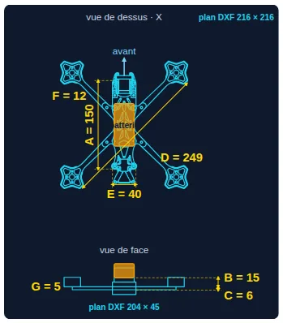

Conçois ton drone FPV. Connais sa vitesse, sa puissance et son autonomie avant de le construire.
Poussée, vitesse max, autonomie et 0 → 100 km/h, calculés avec de vrais composants du marché et calés sur de vrais vols GPS. Du 3 pouces au cinelifter X8, jusqu'au Quad Speeder à fuselage profilé, en 2D, en 3D, et maintenant au calcul CFD OpenFOAM.
Tout ce qu'il faut pour choisir juste
Choisis tes moteurs, hélices, châssis, batterie et électronique : les performances se recalculent en direct, avec les prix et les liens d'achat de chaque pièce.
Vitesse max réaliste
Poussée qui baisse avec la vitesse, traînée selon l'inclinaison, densité de l'air du jour : pas une vitesse « théorique » irréaliste.
Autonomie par style de vol
Cinématique, freestyle ou plein gaz, courbe de décharge propre à chaque chimie (LiPo, LiHV, Li-ion).
Alertes de sécurité
Moteurs contre ESC, connecteur, taille d'hélice, tension : les incompatibilités sont signalées avant l'achat.
0 → 100 km/h
Accélération théorique à l'horizontale et à la verticale, pour comparer la nervosité des configurations.
Nomenclature & coût
Liste d'achat complète, prix en EUR ou USD, liens vers les revendeurs, export PDF / CSV.
Garage de configurations
Enregistre et compare tes configurations côte à côte pour trouver le meilleur compromis.
Une interface pensée pour les pilotes
- Pré-filtres par taille de cadre, type de châssis, marque, KV, pas d'hélice, cellules, capacité…
- Mémoire de tous tes choix entre les pages du mode d'emploi et du wiki.
- Conditions du jour : altitude, température, humidité et pression météo (QNH).

Comment ça marche
Choisis tes pièces
Moteurs, hélices, châssis, batterie, électronique : plus de 1 000 références réelles, filtrables.
Lis tes performances
Vitesse, autonomie, poussée, accélération et alertes se mettent à jour à chaque changement.
Compare & achète
Enregistre tes configurations, compare-les, exporte la liste d'achat avec les liens.
Un calcul CFD complet, sans être ingénieur CFD
D'habitude, un calcul d'écoulement demande des jours de réglages : domaine, maillage, conditions aux limites, solveur, contrôle de convergence. Ici, tout est automatisé et vérifié. Tu choisis l'inclinaison et la vitesse, le reste se fait sur le serveur de calcul.
-
 1 · Ton STL
1 · Ton STLExporté depuis SolidWorks, Fusion 360 ou Onshape. Orientation contrôlée sur 3 vues, comme dans un slicer.
-
 2 · Maillage automatique
2 · Maillage automatiqueSTL réparé, domaine taillé à la taille du drone, ≈ 1 million de mailles, fines près des surfaces et dans le sillage.
-
3 · Calcul OpenFOAM
simpleFoam, turbulence k-ω SST, jusqu'à une traînée stable. Si ça ne converge pas, le calcul continue ou le signale.
-
 4 · Résultats dans l'app
4 · Résultats dans l'appS·Cx mesuré, Cx équivalent, portance, comparaison avec le calcul rapide, carte de pression 3D.
-
5 · ParaView
Surface, coupes et lignes de courant à télécharger, avec la macro qui fait défiler l'air.
Ton propre modèle
Pas une forme générique : ton châssis, ton fuselage, ta batterie, tels que tu les as dessinés.
Contrôlé à chaque étape
Maillage vérifié (checkMesh), 3 essais s'il échoue, convergence à 3 %. Jamais de chiffre faux affiché : une erreur est signalée comme telle.
Plusieurs inclinaisons
Compare en un seul envoi le vol lent et le vol rapide, jusqu'à 800 km/h pour un Speeder.
Là où l'air appuie, là où il décroche
La pression sur chaque surface montre d'où vient la traînée : rouge, l'air bute sur le drone ; bleu, il est aspiré. Derrière, le sillage montre l'air freiné que le drone traîne avec lui.


Fuselage dans le vent : 5 fois moins de traînée
- À plat dans le vent, le Speeder V2V n'offre que 9 cm² de S·Cx : un Cx équivalent de 0,22, celui d'une goutte d'eau imparfaite.
- Incliné à 45°, le même drone monte à 45 cm² : cinq fois plus. Garder le fuselage dans le vent, c'est la clé de la vitesse.
- Le calcul rapide de l'app (Cx fixe 0,68 pour un STL) surestime la traînée d'un Speeder bien profilé : le CFD le corrige.
RANS stationnaire, sans les hélices ni leur souffle, lois de paroi : ordre de grandeur ±15 à 25 %. À confirmer par un vol GPS, comme tout le reste du simulateur.
| Cas (120 km/h) | Calcul rapide | CFD OpenFOAM | Cx |
|---|---|---|---|
| Speeder V2V · fuselage 0° | 28,8 cm² | 9,2 cm² | 0,22 |
| Speeder V2V · fuselage 45° | 59,8 cm² | 45,5 cm² | 0,52 |
S·Cx = traînée ÷ (½ ρ V²). Maillages 1,0 à 1,3 M de cellules, convergence < 0,3 %.
Fais défiler l'air autour de ton drone
Chaque calcul CFD fournit un paquet de fichiers pour ParaView, le logiciel gratuit de visualisation scientifique (Windows, macOS, Linux). Avec la macro fournie, l'animation est prête en deux minutes.
- Installe ParaView (gratuit) : paraview.org/download, la dernière version pour ton système.
- Télécharge le zip ParaView de ton calcul : app > Import de plan > onglet 🌀 Calcul CFD > ton calcul terminé > « Fichiers ParaView ». Dézippe-le.
- Installe la macro une seule fois : ParaView > Macros > Import new macro… >
animer_flux.py(dans le zip). Un bouton « animer_flux » apparaît dans la barre. - Ouvre deux fichiers du même angle : File > Open, Ctrl+clic sur
…surface_drone.vtpet…lignes_courant.vtp, puis Apply. Laisse les coupes de côté : elles cachent le flux. - Clique sur « animer_flux » puis ▶ Play : fond sombre, drone coloré par la pression, traits d'air colorés par leur vitesse qui défilent.
- Enregistre : File > Save Animation pour la vidéo, Save Screenshot pour une image, Save State pour retrouver la scène.
Couleurs
vitesse pour les lignes de courant (bleu = air freiné, jaune = air accéléré), p pour la surface (× 1,2 = Pa).
Coupes
coupe_laterale et coupe_verticale : vitesse et pression dans un plan qui traverse le drone, pour voir le sillage.
Repère
Le vent souffle selon +x, le nez du drone pointe vers −x. Clic gauche pour tourner, molette pour zoomer.
Passe du calculateur à l'atelier de conception
Dessine ton propre châssis ou ton drone de vitesse, vois-le en 3D, importe tes plans de CAO, passe-le au CFD et cale le calcul sur tes vraies mesures.
Ton châssis, coté à l'échelle
- 5 formes : X, Dead Cat, Squished X, Stretch X, H-Frame, en Quad ou en X8 coaxial.
- Esquisse cotée redessinée à chaque saisie, vue de dessus et de face.
- Maquette 3D inclinable, avec sa surface frontale exacte à chaque inclinaison.


Le drone de vitesse, propulsif ou tractif
- Fuselage goutte d'eau, Cx calculé depuis sa finesse (Hoerner).
- Propulsif (type SPEEDER V2) ou tractif sur nacelles (type Blackbird).
- Angle du fuselage : 0° en vol rapide face au vent, 90° au décollage.
- Ton Speeder en STL : cotes reprises du modèle, batterie et centre de gravité réglables.


Tes plans SolidWorks, Fusion 360 ou Onshape
- STL : vue 3D, silhouette réelle à chaque inclinaison, et calcul CFD.
- DXF : ta vue de dessus et ta vue de face remplacent l'esquisse, avec les mêmes cotes.
- Volume 3D depuis tes plans : dessus + face (+ côté) suffisent pour reconstruire ton drone.
Des plans DXF au modèle 3D, en 3 étapes



L'estimation instantanée, avant le CFD
- Inclinaison d'équilibre, traînée, puissance absorbée par l'air et poussée nécessaire, en direct.
- Hélices au bon modèle qui tournent, avec leur jet : poussée perdue sur le châssis, répartition avant / arrière.
- Réponse immédiate pour explorer ; le calcul CFD pour trancher.
La soufflerie applique les formules du simulateur, calées sur les vols GPS ; ses particules illustrent l'écoulement. Le calcul CFD, lui, résout réellement l'écoulement autour de ton STL.
Ta mesure devient la référence
- Recalage GPS : saisis la vitesse mesurée, le calcul s'ajuste et garde ce réglage.
- Garage en ligne : 10 configurations et tes calculs CFD, sur tous tes appareils.

Calé sur de vrais vols, pas sur une brochure
Le modèle aérodynamique est ajusté et vérifié sur des vols plein gaz mesurés au GPS. Il tient compte de l'inclinaison réelle du drone, de la baisse de poussée avec la vitesse, de la densité de l'air et du format de la batterie. Le CFD vient maintenant compléter ces mesures pour les formes que le vol n'a pas encore testées.
Vol de référence mesuré au GPS
| Châssis | TOWA 5″ freestyle, 539 g |
| Moteurs / hélices | XING-E 2207 2450KV · Ethix S5 |
| Batterie | 3S 1550 mAh |
| Conditions | 1 046 m · 0 °C · 35° |
| 2e vol de contrôle | 126 km/h · 436 m · 10 °C |
Des drones qui volent vraiment
Les mesures qui ont servi à caler le simulateur, et ce que donne le même TOWA 5″ une fois allégé et réglé.


Le simulateur est calé sur les vols de référence à 121 et 126 km/h (configuration d'origine, sans vent). Les 145 km/h ont été atteints après allègement et réglages Betaflight ; les 186 km/h avec le vent dans le dos.
Conçu par un pilote qui construit ses drones
Châssis découpés, pièces imprimées en 3D, câblage et pesée : le simulateur est né de l'atelier, pour savoir avant de construire.


Free ou Premium
Free
- Poussée, vitesse, autonomie, 0 → 100 km/h
- Traînée selon l'inclinaison et la batterie
- Alertes de sécurité et nomenclature d'achat
- Garage de 3 configurations
Premium · Offre Fondateur
- Calcul CFD OpenFOAM de ton STL, jusqu'à 10 par mois
- Fichiers ParaView + macro d'animation du flux
- Châssis prototype 5 formes + esquisse + 3D
- Quad Speeder propulsif / tractif + 3D
- Import STL et DXF, soufflerie virtuelle
- Recalage sur ta mesure GPS, garage en ligne
Réservé aux 100 premiers. Paiement unique sur Ko-fi : indique ton e-mail dans le message, tu reçois ton code personnel sous 24 h. Question : talktruefpv@gmail.com
Questions fréquentes
Qu'est-ce que le calcul CFD ?
Un vrai calcul d'écoulement de l'air autour de ton drone, fait avec OpenFOAM (le logiciel CFD libre utilisé dans l'industrie) à partir de ton fichier STL. Tu obtiens la traînée mesurée (S·Cx), le Cx équivalent, la portance, une carte de pression 3D et un paquet de fichiers pour ParaView.
Faut-il savoir utiliser OpenFOAM ?
Non. Tu charges ton STL, tu choisis l'inclinaison et la vitesse, et le serveur de calcul fait tout : réparation du STL, domaine, maillage snappyHexMesh, calcul k-ω SST jusqu'à convergence, contrôles. Rien à installer sur ton ordinateur.
Combien de temps dure un calcul ?
Quelques dizaines de minutes par inclinaison, selon la taille du modèle et la file d'attente. Tu peux fermer l'app : le calcul continue et le résultat t'attend dans l'onglet 🌀 Calcul CFD.
Comment voir les résultats dans ParaView ?
Installe ParaView (gratuit), télécharge le zip de ton calcul, importe la macro animer_flux.py (Macros > Import new macro), ouvre surface_drone.vtp et lignes_courant.vtp du même angle, clique sur la macro puis ▶. Détail pas à pas dans la section ParaView.
Le CFD est-il exact ?
C'est un calcul stationnaire (RANS) sans les hélices ni leur souffle, avec des lois de paroi : compte ±15 à 25 %. Il est idéal pour comparer des formes et voir d'où vient la traînée. La vitesse réelle se confirme par un vol GPS, sur laquelle tu peux recaler le simulateur.
Et la soufflerie virtuelle ?
C'est l'estimation instantanée : mêmes formules que la vitesse max, calées sur des vols GPS, avec l'écoulement et le jet des hélices illustrés. Utilise-la pour explorer, puis le calcul CFD pour trancher.
Le simulateur est-il gratuit ?
Oui. Le calcul de poussée, vitesse, autonomie, accélération et les alertes de sécurité sont gratuits et sans inscription. Le Premium ajoute le calcul CFD, le châssis prototype, le Quad Speeder, la 3D, l'import STL/DXF, le recalage GPS et le garage en ligne.
Quelle différence avec eCalc ?
eCalc est une référence pour le calcul pur. TALKTRUE FPV est une plateforme de conception : calcul CFD de ton propre modèle, composants réels avec prix et liens d'achat, garage de configurations, esquisses cotées, maquettes 3D et import de tes plans de CAO.
Qui est BOB ?
BOB le Racer, c'est le drone de course à canopée jaune qui a inspiré le logo TALKTRUE FPV : sa silhouette est au centre de la sphère. L'effigie de la marque, et un vrai drone qui vole.
Comment obtenir un accès Premium ?
Avec l'offre Fondateur : 24 € une seule fois, accès Premium à vie, réservée aux 100 premiers. Paie sur Ko-fi en indiquant ton e-mail dans le message, et tu reçois ton code personnel sous 24 h. Une question : talktruefpv@gmail.com ou Instagram @talktruefpv.
Prêt à voir ce que ton drone a dans le ventre ?
Choisis tes pièces, lis ta vitesse, puis passe ton modèle au CFD.
🚀 Lancer le simulateur